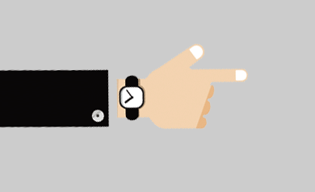
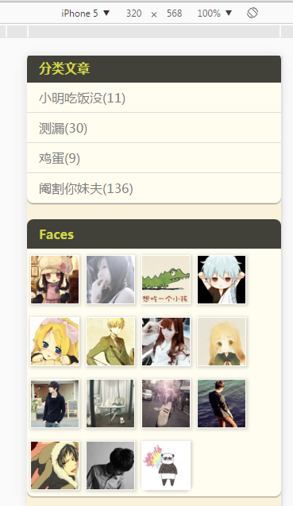
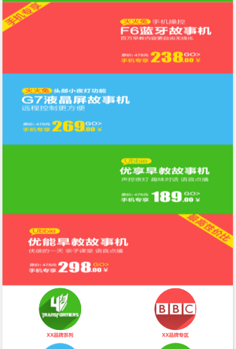
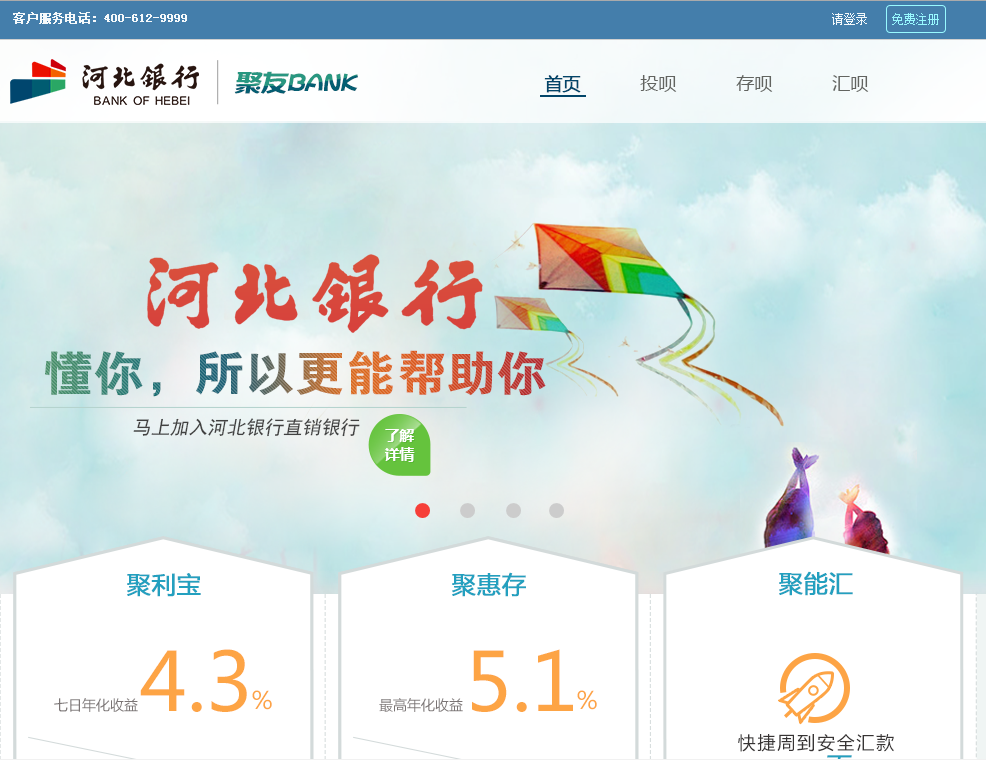

个人简历
欢迎查看程满想的简历，祝你生活愉快
程满想
18652444905
出生年月：1990.02
邮箱：cmx_19901218@163.com
Github:https://github.com/chengmanxiang
学历：本科
爱好：爬山、游泳、思考
工作时间：2年半以上
团
队
展
示
自我介绍
本人性格热情开朗,待人友好,为人诚实谦虚。工作勤奋,认真负责,能吃苦耐劳,尽职尽责,有耐心。具有亲和力,平易近人,善于与人沟通。
期望工作

期望地点
深圳
期望职位
Html5开发工程师
期望薪资
面议
期望行业
计算机编程
我的优势
兴趣
练兵
自信
1、兴趣—因为热爱，所以选择。多年以后他她或是银行行长、省级干部。我仍是一个工程师，因为我有坚持的信条
2、练兵—多年的工作经验、社会活动，深知学校与社会的差距，只有不断提高自己，才能更好的与社会接轨。
3、自信—自信是必须的，自负是不可取的，对于不懂的，打破砂锅问到底的是必须的。
专业技能
熟练掌握HTML(xhtml1.0、html5)、CSS(css2.0、css3.0)、JavaScript等语言，了解PHP语言
熟悉W3C标准、HTML5语义化、用户体验、交互设计等相关知识
熟练使用Firebug进行性能调试，熟练掌握五大主流浏览器的兼容问题
熟悉掌握移动端页面的开发和响应式布局
熟悉HTML5本地存储API、Video、Audio、XMLHttpRequestLevel2和Canvas应用等前端开发新技术
熟练使用Ajax技术实现与后台进行数据(JSON、XML)交互
熟悉面向对象编程思想，了解单例、观察者等设计模式和MVC及MVVM等开发模式
熟悉jQuery、Bootstrap、jQuery UI、 Swiper、zepto等框架插件
熟悉jQueryMobile、phonegap 移动端WebApp开发以及HybridApp开发
熟悉使用sublime，Hbuilder，Photoshop等开发和编辑工具
了解AngularJs、ES6新特性、Promise模式
主要项目：
果敢时代大V店
项目描述：
大V店是MAMA+旗下主打产品，定位为妈妈社群电商。以让妈妈轻松开店、随时随地学习，认识更多优秀妈妈为服务宗旨，是目前国内妈妈创业、学习、社交、购物的首选平台。
工作职责：
本项目是团队开发，个人负责大V店微商页面开发，代码迭代与优化。
主要技术：
Html5 +CSS3响应排版，轮播动画，无缝滚动，js交互，倒计时，图片懒加载技术，ajax数据交互。
主要项目：
肝胆相照
项目描述：
肝胆相照项目是解决医生患者交流的移动互联网平台，有效解决了当前慢病管理中医生和患者信息沟通不畅，专家医生资源短缺的问题。
工作职责：
本项目团队开发，个人负责App跨平台页面开发，调试维护。
主要技术：
Html5 +CSS3响应式排版，jQuery Mobile 框架的使用，上拉刷新，下拉加载更多等。
主要项目：
波奇网
项目描述：
波奇网为养宠爱宠人士提供线上线下的一站式服务，全方位打造海量养宠资讯、精致爱宠服务和琳琅满目的商品，全面关爱宠物生活，相当有趣的宠物网站。
工作职责：
本项目独立开发，商品首页，商品详情，商品列表，购物车，活动页，登录、注册等页面开发，后期代码优化与维护，数据更新。
主要技术：
Html5+CSS3固定布局，图片懒加载，ajax数据交互，锚点，放大镜，焦点轮播效果，tab切换。
我的其它作品



联系我吧
扫一扫把我存到通讯录
个人简历